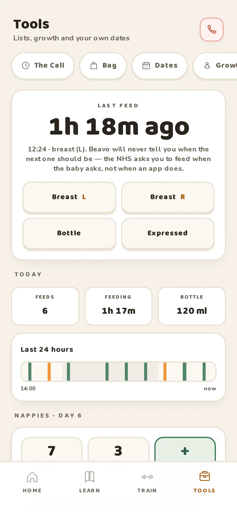
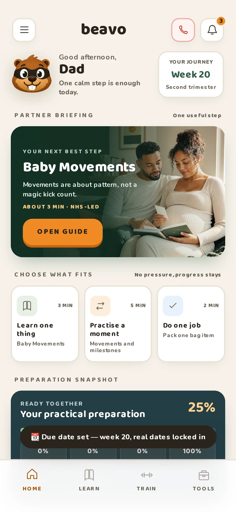
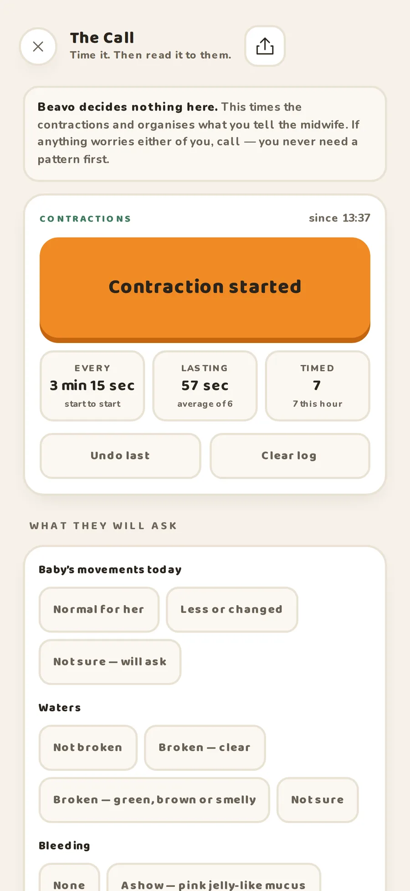
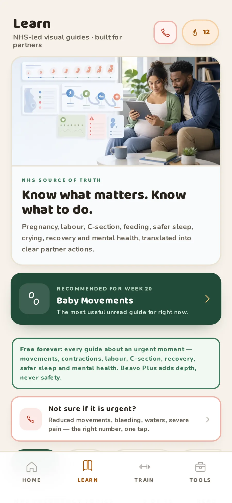
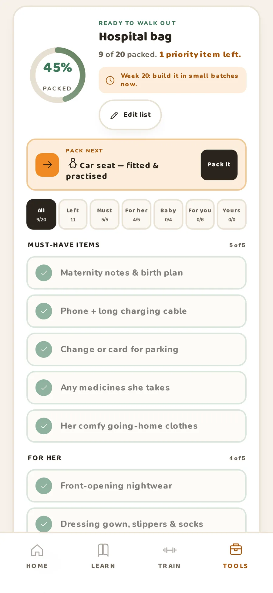
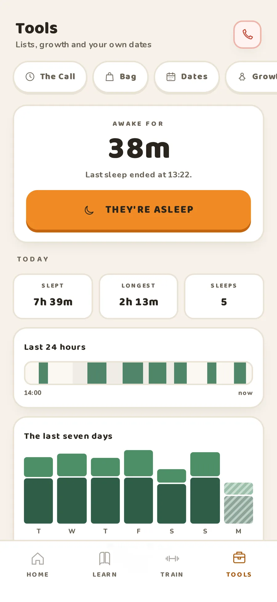

THE NEXT FEED
“When was the last one?”
A shared conversation starts with remembering the basics.

FOR DADS & BIRTH PARTNERS
A baby changes everything.
A little support changes how you show up.
Meet the pregnancy app with a place for you. Clear guidance, practical tools and one useful next step.
Made for the UK. Available on iPhone.

There are scans to remember. Bags to pack. Conversations you haven't had before. Beavo helps you turn “What can I do?” into something useful.
Understand the week you're in, with guidance written for your part in it.
Read a little. Practise a moment. Take one thing off your partner's plate.
A few minutes that fit around your life.
For the moments that become your life.

Time contractions and gather what to say to your maternity team. It organises your information; your care team gives the advice.
ALWAYS FREE
Plain English guides with the NHS source attached. Open what's relevant and take it at your own pace.
KNOW. PRACTISE. PREPARE.
A practical checklist for her, the baby and you. Make it your own, tick things off and keep it close.
ALWAYS FREEA weekly briefing, a practical action or something to learn. You choose what fits.
YOUR PACETHE BIGGEST THING YOU CAN DO
For the questions after the appointment.
The tea nobody asked for.
The “we'll figure it out” at 2am.
A place to understand what's coming,
and how you can be part of it.
SECOND TRIMESTER
Usually offered between 18 and 21 weeks, this scan checks your baby's development. Make room for questions you both want to ask.
Ask your partner whether they'd like you there, and write down a question together.
An example of the NHS schedule. Your care team will confirm the appointments that are right for your pregnancy.
For the sleepy handovers and the beautifully messy beginning. Simple feed and sleep logs help you pick up where your partner left off.
A shared conversation starts with remembering the basics.

Log sleep without turning your baby into a target to meet.

A record of your day, to support your conversations. For any care concern, speak to your maternity team or health visitor.
If you've experienced a loss, there's space for you here, too. Pause the pregnancy prompts. Keep what you saved. Find words and support when you're ready.
Nothing to complete.
No progress to earn. No timeline to keep up with.
Support for you, too.
Guidance, messages to share and UK support organisations.
Always free.
Support after a loss is part of Beavo for everyone.
The things you might need in a hurry.
The support you should never have to pay for.
It's for dads and birth partners. If you're the person supporting someone through pregnancy, birth and the first weeks, there's a place for you here.
Yes. Choose Continue as guest in the app. Guest progress stays on your device and may be lost if you delete the app or clear its storage.
Core guidance and planning tools work offline. Sign-in, syncing, external links and calendar services need an internet connection.
Beavo's pregnancy guidance links to NHS sources. Beavo is independent and is not affiliated with or endorsed by the NHS. Your care team gives advice for your individual circumstances.
Visit Beavo Support for account, calendar and progress questions, or email ahmed@dolph.uk.
FOR YOUR PART OF THE STORY
Free to start. Here when you need it.